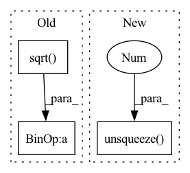

Pattern ID :8108

Before Change
if self.output_layer.bias is not None:
new_bias = torch.empty(n_classes_to_add)
fan_in, _ = nn.init._calculate_fan_in_and_fan_out(self.output_layer.weight)
bound = 1 / math.sqrt(fan_in) if fan_in > 0 else 0
nn.init.uniform_(new_bias, -bound, bound)
self.output_layer.bias = nn.parameter.Parameter(
torch.cat([self.output_layer.bias, new_bias], axis=0)
After Change
n_classes_to_add
Number of output dimensions to add.
new_weights = torch.mean(self.output_layer.weight,dim=0).unsqueeze(1).T
if n_classes_to_add > 1:
new_weights = new_weights.unsqueeze(1).T.repeat(1,n_classes_to_add, 1).squeeze()
self.output_layer.weight = nn.parameter.Parameter(
In pattern: SUPERPATTERN
Frequency: 4
Non-data size: 3
Instances
Fragment ID: 28718823
Project Name: online-ml/river-torch
Commit Name: 27f914a787bc844de5af4720487e2314f206960d
Time: 2022-09-26
Author: cedric.kulbach@googlemail.com
File Name: river_torch/classification/classifier.py
M Class Name: Classifier
N Class Name: Classifier
M Method Name: _add_output_features(2)
N Method Name: _add_output_features(2)
M Parent Class: DeepEstimator,base.Classifier
N Parent Class: DeepEstimator,base.Classifier
M File Name: river_torch/classification/classifier.py
N File Name: river_torch/classification/classifier.py
M Start Line: 300
M End Line: 310
N Start Line: 300
N End Line: 311
'>
Before Change
maxlen, batch_size = src.shape[0], src.shape[1] // src.shape = [215, 128, 36]
Question: why 72 features (36 feature + 36 mask)?
src = self.encoder(src) * math.sqrt(self.d_model) // linear layer: 36 --> 36 // Mapping
// src = src* math.sqrt(self.d_model)
After Change
elif masked_agg ==False:
Without masked aggregation across rows
// output = r_out[-1, :, :].squeeze(0) // take the last step"s output, shape[128, 36]
output = torch.sum(r_out, dim=0) / (lengths.unsqueeze(1) + 1)
concat static
'>
Fragment ID: 28718821
Project Name: mims-harvard/raindrop
Commit Name: 0b0a19b4ba53c4a1303ef507483e994acffac9b8
Time: 2021-09-09
Author: xiang.alan.zhang@gmail.com
File Name: code/baselines/models.py
M Class Name: Simple_classifier
N Class Name: Simple_classifier
M Method Name: forward(5)
N Method Name: forward(5)
M Parent Class: nn.Module
N Parent Class: nn.Module
M File Name: code/baselines/models.py
N File Name: code/baselines/models.py
M Start Line: 1329
M End Line: 1378
N Start Line: 1358
N End Line: 1385
'>
Before Change
src_embedding = src_embedding + src_embedding_p
tgt_embedding = tgt_embedding + tgt_embedding_p
scores = torch.matmul(src_embedding.transpose(2, 1).contiguous(), tgt_embedding) / math.sqrt(self.emb_dims)
scores = torch.softmax(scores, dim=2)
// b x points x points
feat1_corr = torch.matmul(feat2, scores.transpose(2, 1).contiguous())
rotation_ab, translation_ab = self.head(feat1, feat1_corr)
After Change
else:
rotation_ba = rotation_ab.transpose(2, 1).contiguous()
translation_ba = -torch.matmul(rotation_ba, translation_ab.unsqueeze(2)).squeeze(2)
T_12 = rt_to_transformation(rotation_ab, translation_ab.unsqueeze(2))
'>
Fragment ID: 28718818
Project Name: paul007pl/mvp_benchmark
Commit Name: cb5622fec6ad947b57a83033563a402533978c61
Time: 2021-07-12
Author: panliang_de2007@qq.com
File Name: registration/models/dcp.py
M Class Name: Model
N Class Name: Model
M Method Name: forward(5)
N Method Name: forward(5)
M Parent Class: nn.Module
N Parent Class: nn.Module
M File Name: registration/models/dcp.py
N File Name: registration/models/dcp.py
M Start Line: 270
M End Line: 294
N Start Line: 394
N End Line: 425
'>
Before Change
temporal_mask = temporal[:, temporal_cols.get_loc("available_mask"), :]
y_means = torch.sum(temporal_y * temporal_mask, dim=-1, keepdim=True) / torch.sum(temporal_mask, dim=-1, keepdim=True)
y_stds = torch.sqrt(torch.sum(temporal_mask*(temporal_y-y_means)**2, dim=-1, keepdim=True)/ \
torch.sum(temporal_mask, dim=-1, keepdim=True) )
temporal_y = (temporal_y - y_means) / y_stds
temporal[:, temporal_cols.get_loc("y"), :] = temporal_y
return batch, y_means, y_stds
After Change
temporal_mask[:, -cutoff:] = 0
// Normalize. self.scaler stores the shift and scale for inverse transform
temporal_mask = temporal_mask.unsqueeze(1) // Add channel dimension for scaler.transform.
temporal_data = self.scaler.transform(x=temporal_data, mask=temporal_mask)
// Replace values in windows dict
'>
Fragment ID: 28718828
Project Name: nixtla/neuralforecast
Commit Name: 73dab945c58726e3f150b851bb94e3a003a590a0
Time: 2022-11-02
Author: mergenthaler.m@gmail.com
File Name: neuralforecast/common/_base_recurrent.py
M Class Name: BaseRecurrent
N Class Name: BaseRecurrent
M Method Name: _normalization(2)
N Method Name: _normalization(2)
M Parent Class: pl.LightningModule
N Parent Class: pl.LightningModule
M File Name: neuralforecast/common/_base_recurrent.py
N File Name: neuralforecast/common/_base_recurrent.py
M Start Line: 106
M End Line: 124
N Start Line: 104
N End Line: 125